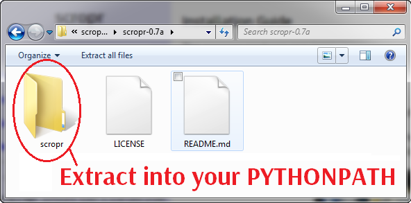

scropr is a Python 3 package for educational programming. Its aim is to make it easy for new programmers (and experienced one too!) to create interactive programs with graphics and animations.
The project is motivated by the recurring question: “What is the best language to learn as a first programming language?” Popular answers to this question include Python, Processing, Scratch, and various robot control languages. The scropr project aims to make the best features of the other languages available in Python. (The name scropr comes from the first two letters of Scratch, robotics, and Porocessing.)
Features include:
a simple framework for creating interactive animations
image manipulation
graphical user interface
graph plotting
sprite management
physics-based collisions
robotics simulations
To learn more, select one of the blue links from the navigation panel along the left side of the page.
Please ensure that Python and Pygame are both installed before setting up scropr.
Download the scropr source code from GitHub as a zip or tar.gz archive. Open the archive with your favourite archive program* and extract the scropr package. (*Windows Explorer can be used to open the zip format archive.)

As scropr is entirely Python 3 source code, no special installation is required. Simply extract the scropr folder to your source folder, or to another location in your PYTHONPATH (e.g. the Lib/site-packages folder of your Python installation.)
Reference
Module
Description
sketch
Create interactive animations with support for sprites and GUI controls.
physics
Create animations with objects that have physics-based collision behaviour.
papplet
Create interactive animations with a Processing-like API; no sprite or GUI features.
robot
Create robot sprites controlled by a “brain” that runs in its own thread.
image
Load and manipulate images.
plot
Create graphs and other drawings that use an abstract coordinate system.

 Assignable
Assignable
 Read-only
Read-only